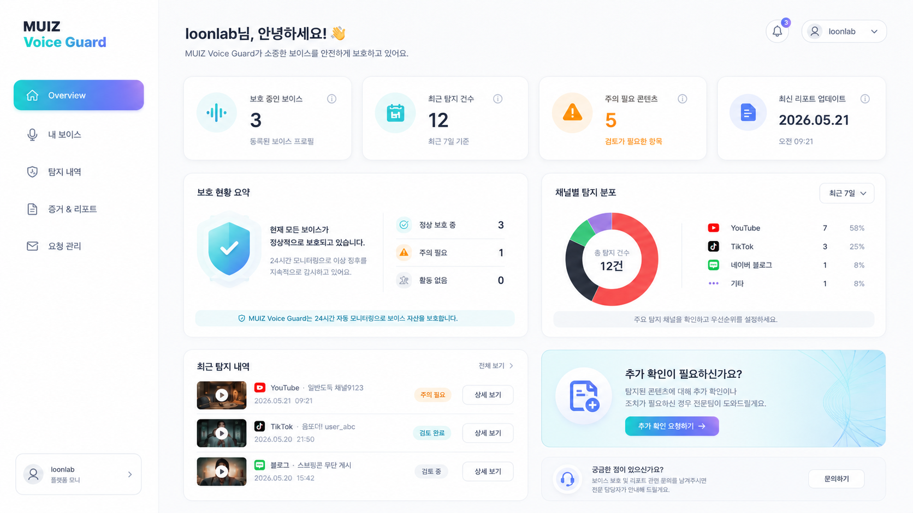
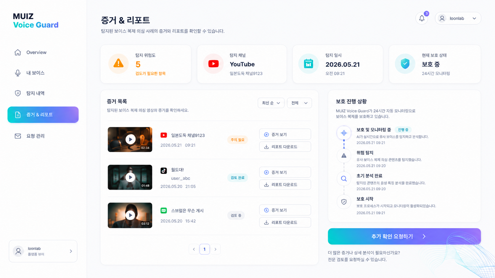
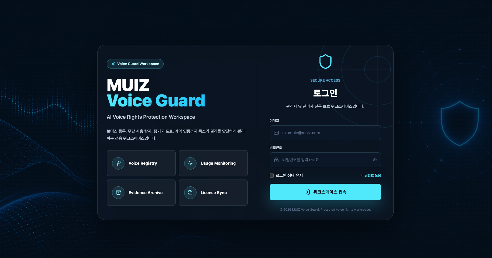
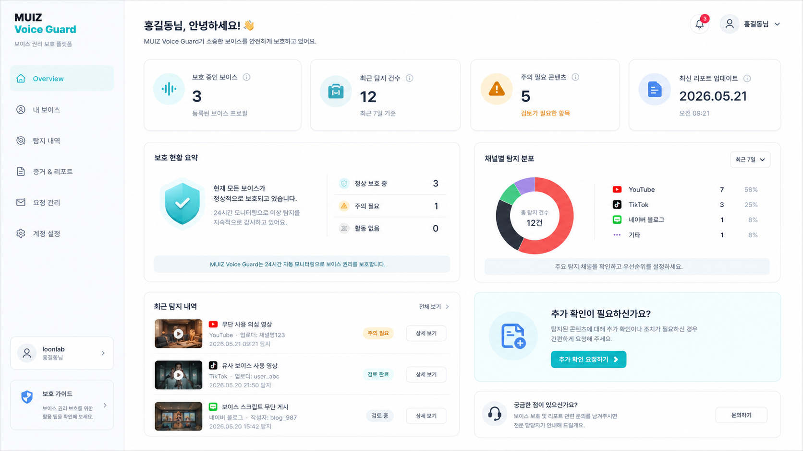
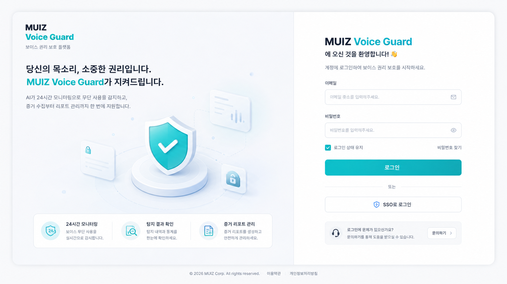
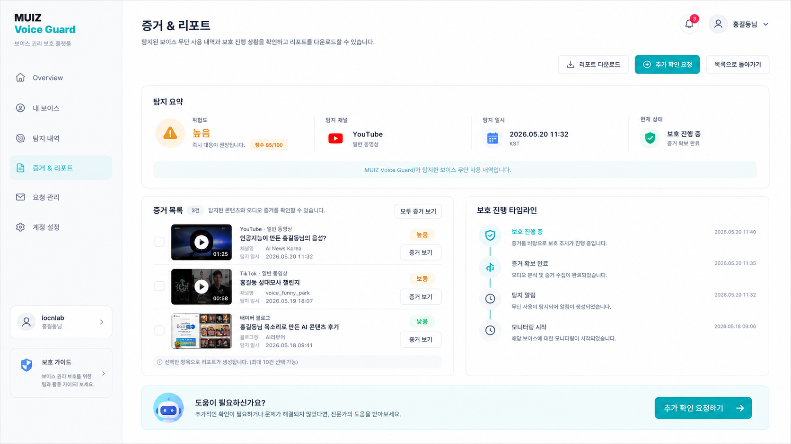
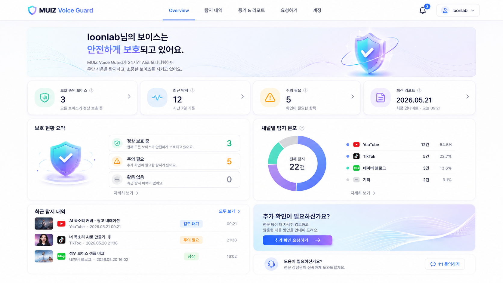
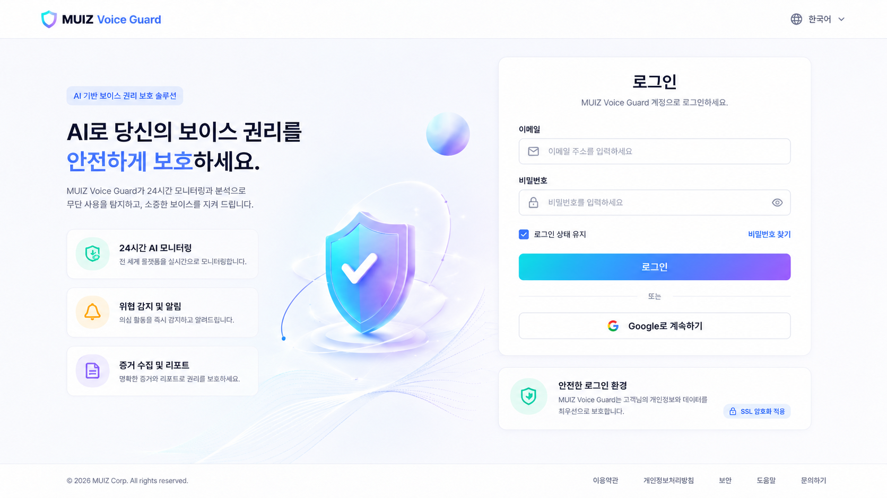
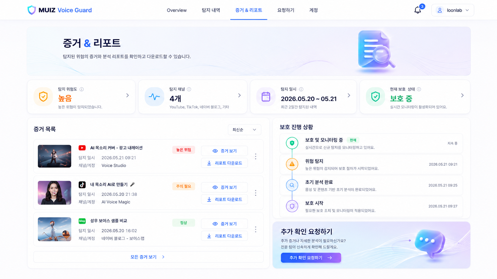

본 자료는 AI 기반 보이스 권리 보호 서비스
MUIZ Voice Guard의
고객용 Viewer 화면 디자인 방향을
검토하기 위한 시안입니다.
동일한 기능 구성을 기준으로 3가지 표현 방향을 비교합니다.
권리자의 목소리가 온라인 콘텐츠에서 무단으로 사용되거나, AI 보이스로 복제·활용되는 사례를 탐지하고, 해당 내용을 증거화하여 리포트로 제공합니다.
단순 탐지에 그치지 않고, 이후 권리 보호와 대응을 위한 자료 확인, 리포트 다운로드, 추가 검토 요청까지 지원하는 것을 목표로 합니다.
사용자 유형에 따라 화면 성격을 분리할 필요가 있습니다.
현재 시안은 고객이 직접 분석 작업을 수행하는 관리자 화면이 아니라, 자신의 보이스가 어떻게 보호되고 있는지 확인하는 Viewer / 리포트 포털을 목표로 합니다. 핵심 검토 포인트는 다음과 같습니다.
UI 구조와 브랜드 표현 방식에 따라 3가지 방향으로 구성했습니다. 각 안은 로그인 · Overview · Detection / Report 화면으로 구성되며, 내용 구성은 유사하게 유지하고 레이아웃과 시각적 인상 차이를 비교합니다.
좌측 네비게이션 구조는 유지하되, CTA 버튼과 활성 메뉴, 주요 아이콘에 그라데이션을 적용해 AI 서비스다운 느낌을 강화한 안. 기존 대시보드 구조와 새로운 AI 브랜딩 감성의 중간 방향입니다.


좌측 네비게이션 구조를 유지하면서, 기존 MUIZ Voice Guard의 민트/Cyan 계열 초창기 컨셉 컬러를 그대로 적용한 안. 전체 화면은 고객용 Viewer에 맞춰 화이트톤으로 구성하되, 로고와 주요 포인트 컬러는 기존 브랜드의 단색 민트/Cyan을 유지했습니다. 새로운 AI 그라데이션 톤을 강하게 추가하기보다는, 현재 서비스의 브랜드 인상을 안정적으로 이어가는 방향입니다.




좌측 네비게이션을 제거하고 상단 헤더 메뉴 중심으로 구성한 안. AI 그라데이션 포인트를 적용해 고객용 플랫폼 / 리포트 포털 느낌을 가장 강하게 보여주는 방향입니다. 관리자 페이지 느낌을 가장 많이 줄인 안.



| 구분 | 1AI 강조형 | 2기존 브랜드 연속형 | 3포털형 |
|---|---|---|---|
| 구조 | 좌측 네비 | 좌측 네비 | 상단 헤더 메뉴 |
| 톤 | AI 강조형 | 기존 민트/Cyan 단색 초창기 컨셉 컬러 유지 | 플랫폼 · 포털형 |
| 인상 | 세련된 AI 대시보드 | 안정적인 화이트톤 Viewer | 고객 친화적 서비스 포털 |
| 장점 | AI 느낌과 구조 안정성의 균형 | 브랜드 연속성 높음 | 관리자 느낌 최소화 |
| 단점 | 약간 대시보드 느낌 남음 | 새로움은 상대적으로 약함 | 기존 구조와 차이가 큼 |
기능이 아니라 고객 경험의 방향에 대한 결정입니다.
고객용 Viewer로 가장 적합한 방향에 의견을 남겨주세요.